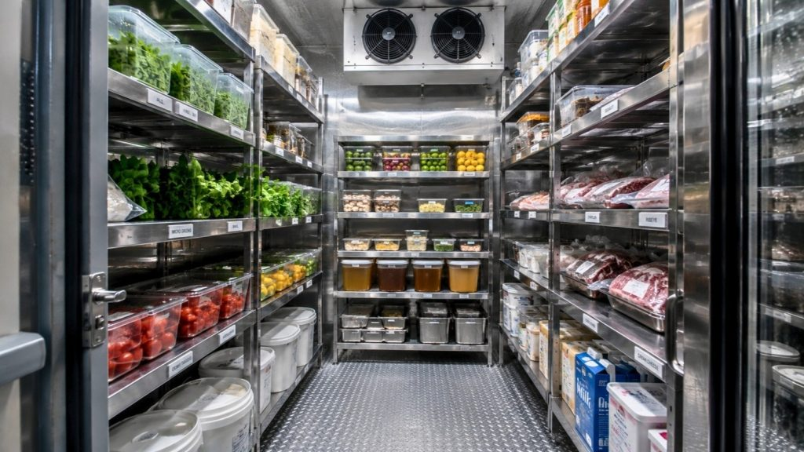
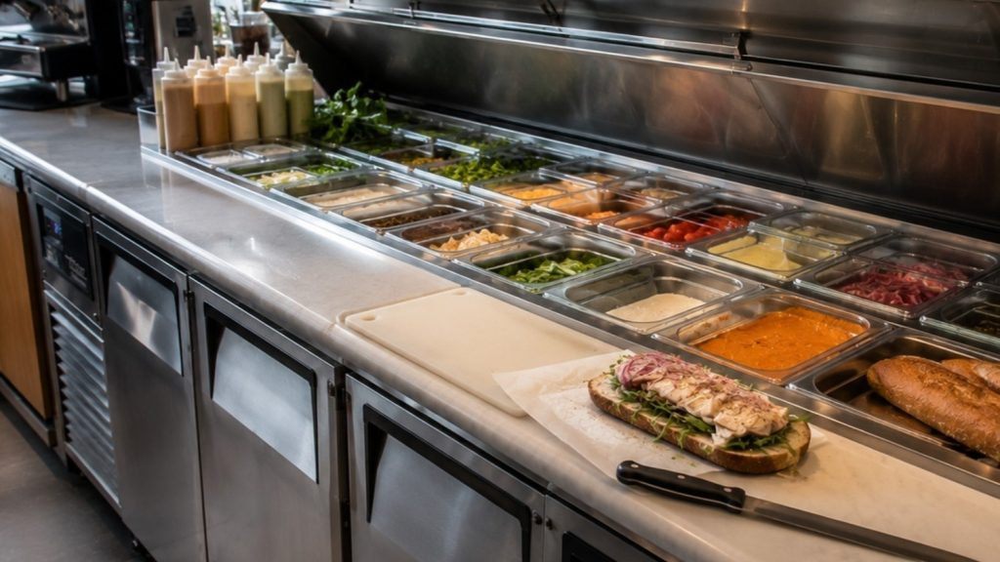
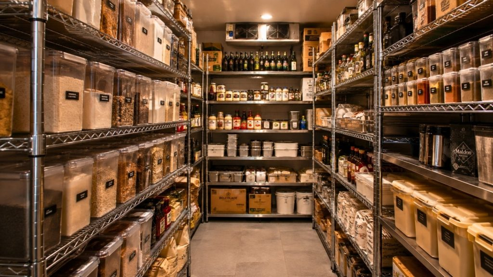
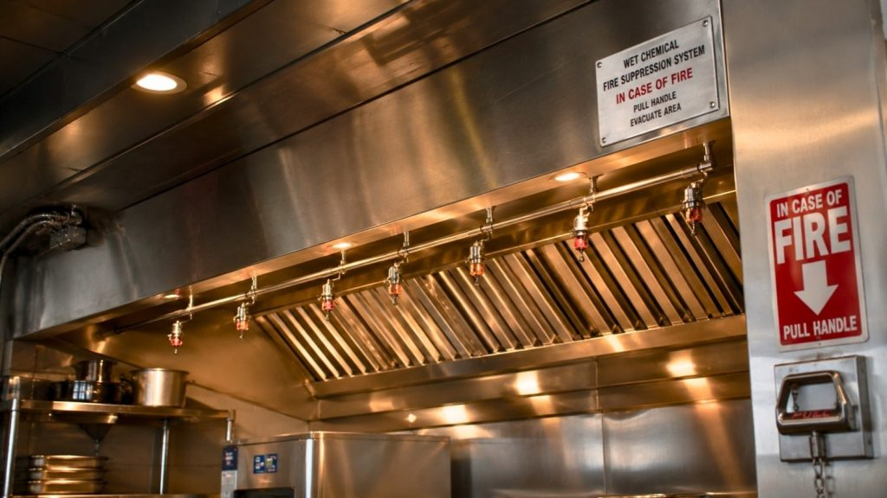

Opening a restaurant or cafe is one of the most exciting ventures you can undertake, but it’s also one of the most equipment-intensive. Behind every great plate of food is a kitchen built with the right tools, laid out with precision, and stocked with commercial-grade machinery that can keep up with the demands of a busy service.
At SprintCo, we’ve spent years designing kitchens for restaurants of every size and cuisine type. This guide brings together everything we know about commercial kitchen equipment, what you need, why you need it, and how to choose wisely.
Why Commercial Kitchen Equipment Matters
•A commercial kitchen is not simply a bigger version of your home kitchen. It is an industrial system engineered for speed, hygiene, consistency, and volume. The equipment operating inside it must comply with health codes, withstand continuous use across multiple shifts, and integrate seamlessly into your kitchen’s workflow.
Choosing the wrong equipment can cost you far more than money. Poor layout decisions and underpowered machinery lead to slow ticket times, frustrated staff, and ultimately, disappointed guests. The right equipment, on the other hand, becomes invisible; it simply works, every day, so your team can focus on cooking rather than compensating for limitations.
This guide covers all the major categories of commercial kitchen equipment you’ll encounter when designing or outfitting a professional food service operation.u into people’s routines.
1. Cooking Equipment – The Heart of the Kitchen
Commercial Ranges and Burners
A commercial range is typically the centrepiece of any restaurant kitchen. Unlike domestic stoves, commercial ranges deliver much higher BTU outputs, enabling rapid temperature changes and the high-heat cooking that restaurant dishes demand. When selecting a range, consider your fuel source (gas or electric), the number of burners, and whether an oven is integrated beneath.
Gas ranges remain the industry standard for most cuisines because chefs can control flame intensity visually and react instantly. Induction ranges are gaining popularity in modern kitchens, especially in cafes or compact spaces, due to their energy efficiency and safer, cooler cooking surfaces.
Ovens
Commercial ovens come in several types, each serving a distinct purpose:
Conveyor ovens are designed for high-volume operations like pizza chains, where consistency and speed matter above all else.
Convection ovens use fans to circulate hot air, producing even baking and faster cooking times. They are workhorses for bakeries and cafes.
Deck ovens use radiant heat from stone or ceramic decks, making them ideal for artisan breads and pizzas.
Combi ovens combine steam and convection, giving chefs extraordinary versatility from steaming vegetables to roasting meats to baking pastries, all in one unit. For restaurants with diverse menus, a combi oven is an exceptionally smart investment.
Grills, Griddles, and Fryers
A flat-top griddle is one of the most versatile pieces of cooking equipment in a commercial kitchen. It handles eggs, pancakes, burgers, sandwiches, and stir-fry all on one surface. Charbroiler grills add the charred texture and smokiness that guests associate with premium food.
Deep fryers are non-negotiable for many restaurant concepts. When choosing a fryer, consider oil capacity, recovery time (how quickly the oil returns to temperature after food is added), and filtering systems. Built-in filtration systems extend oil life significantly, saving both money and labour.
2. Food Preparation Equipment
Commercial Food Processors and Mixers
A commercial food processor can replace hours of manual chopping, slicing, and dicing. For high-volume operations, investing in a processor with multiple blade attachments dramatically speeds up prep.
Planetary mixers are essential for bakeries and cafes. Available in 20-quart, 60-quart, and larger capacities, they handle dough, batters, and creams with ease. For bread-focused operations, a spiral mixer is preferred because it develops gluten more gently and produces superior texture.
Slicers and Cutting Equipment
A commercial meat slicer gives kitchens consistent, precise cuts every time, critical for portion control and presentation. Look for models with easy-clean designs and blade guards that meet safety standards.
Heavy-duty chef’s knives are still irreplaceable, but a well-maintained slicer supports your team on high-volume tasks. Electric can openers, vegetable peelers, and mandoline slicers round out a fully equipped prep station.
Worktables and Prep Surfaces
Stainless steel worktables are the gold standard in commercial kitchens for good reason. They resist bacteria, handle heat, and are easy to sanitise. When planning your kitchen layout, ensure every cook has sufficient work surface space at their station. A cramped prep area leads to errors and accidents.

3. Refrigeration and Cold Storage
Refrigeration is arguably the most critical category of equipment from a food safety perspective. Maintaining proper temperatures is not optional; it is a legal requirement and a safeguard against foodborne illness.
Walk-In Coolers and Freezers
Walk-in coolers allow bulk storage of perishables. For most mid-to-large restaurants, a walk-in is essential, as it reduces the need to restock daily and allows purchasing in larger quantities at a lower cost. Walk-in freezers serve the same function as walk-in coolers for frozen goods.
When designing a walk-in, work with your kitchen designer (something SprintCo specialises in) to position it as close to your receiving area and prep stations as possible. Every step saved in moving product is efficiency gained during a busy service.
Reach-In Refrigerators and Freezers
Reach-in units sit on the line and give cooks immediate access to prepped ingredients. Glass-door reach-ins help staff find items quickly without opening multiple doors, reducing temperature fluctuations. Undercounter refrigerators maximise space in tight kitchens and work beautifully in sandwich stations and bar setups.
Refrigerated Prep Tables and Display CasesRefrigerated prep tables common in sandwich shops, pizza parlours, and delis keep ingredients cold at arm’s reach while staff build orders. For cafes and bakeries, refrigerated display cases allow guests to see and select from chilled pastries, desserts, and beverages.

4. Dishwashing and Sanitation Equipment
A clean kitchen is a safe kitchen. Commercial dishwashing equipment is built for throughput and sanitation that domestic appliances simply cannot achieve.
Undercounter and Door-Type Dishwashers
Undercounter dishwashers are ideal for smaller operations or bar areas. Door-type (pass-through) dishwashers handle higher volumes efficiently, with dishes loaded on one side and removed clean from the other.
Conveyor Dishwashers
For large-volume restaurants and cafeterias, conveyor dishwashers process hundreds of racks per hour continuously. They represent a significant investment but pay dividends in labour savings and consistency for busy operations.
Three-Compartment Sinks
Regardless of your dishwasher setup, health codes in most jurisdictions require a three-compartment sink for manual washing, rinsing, and sanitising. Handwashing sinks, separate from prep and dishwashing sinks, are also mandated and should be positioned conveniently throughout the kitchen.
5. Ventilation and Exhaust Systems
Commercial cooking generates enormous amounts of heat, smoke, and grease-laden air. A properly designed ventilation system is not just a comfort feature; it is required by building and safety codes.
Exhaust Hoods
Type I hoods are designed for cooking equipment that produces grease or smoke (ranges, fryers, griddles). Type II hoods handle heat and steam but not grease, making them suitable for dishwashers and ovens baking non-greasy foods.
The hood must be sized correctly for the equipment beneath it. An undersized hood leads to grease buildup, poor air quality, and fire risk. An oversized hood wastes energy. SprintCo’s design team calculates hood specifications as part of every kitchen layout project.
Make-Up Air Systems
When an exhaust hood removes air from the kitchen, replacement (make-up) air must be supplied. Without it, the kitchen becomes negatively pressurised, leading to uncomfortable working conditions and compromised hood performance. A balanced ventilation system is essential to a functional, comfortable kitchen.

6. Beverage Equipment
For cafes and restaurants with a strong beverage program, the right equipment is as important as anything on the cooking line.
Espresso Machines and Grinders
A commercial espresso machine is the centrepiece of any cafe. Semi-automatic machines give baristas control over extraction, while super-automatic machines deliver consistency with less training required. Pair any espresso machine with a commercial-grade grinder, and fresh grinding is non-negotiable for quality espresso.
Blenders and Juicers
High-powered commercial blenders handle smoothies, soups, and sauces efficiently. For juice bars or health-focused cafes, centrifugal or masticating juicers are vital equipment. Look for models designed for continuous use rather than domestic-grade units that overheat under restaurant conditions.
Coffee Brewers and Water Filtration
Batch coffee brewers with thermal carafes keep coffee fresh longer than glass pots on heated plates. Water filtration systems are often overlooked, but they dramatically affect the taste of coffee, tea, and even ice. Hard or heavily chlorinated water impairs flavour regardless of how good your beans are.
7. Storage and Shelving
Organised storage keeps a kitchen running efficiently. Stainless steel wire shelving units are versatile, easy to clean, and allow airflow around stored products. Solid shelving is preferred for storing dry goods that could absorb moisture.
Dry Storage
A dedicated dry storage area, separate from the kitchen’s heat and moisture, extends the shelf life of pantry staples. Proper labelling systems and FIFO (first in, first out) organisation practices should be built into your team’s culture from day one.
Mobile Shelving and Holding Cabinets
Mobile shelving units allow flexible reconfiguration as your menu or workflow evolves. Heated holding cabinets keep cooked food at safe serving temperatures during peak service, essential for banquet operations, cafeteria lines, and high-volume brunch services.
8. Safety and Fire Suppression
No kitchen equipment guide would be complete without addressing safety. Commercial kitchens are high-risk environments for fire, and your fire suppression system must be designed for the specific equipment in use.
A wet chemical fire suppression system installed above cooking equipment is the industry standard. It automatically activates when temperatures exceed a set threshold, suppressing grease fires that water cannot extinguish. Annual servicing and inspections of fire suppression systems are legally required in most regions.
Beyond fire suppression, non-slip flooring, first aid kits, fire extinguishers rated for kitchen use, and clear emergency procedures complete a safe kitchen environment.
Designing Your Kitchen Around Your Equipment
Equipment selection and kitchen design are inseparable. At SprintCo, we never treat these as separate conversations. The position of your cooking line relative to your prep area, the distance between your cold storage and your service pass, the placement of your ventilation and plumbing, all of these decisions shape how efficiently your team can work every single day.
A well-designed commercial kitchen follows a logical flow: receiving → storage → prep → cooking → plating → service. When equipment is chosen and positioned to support this flow, your kitchen becomes a machine in the best possible sense: powerful, organised, and efficient.
Whether you are fitting out a compact espresso bar, a full-service fine dining kitchen, or a high-volume cafe, the principles remain the same. Choose commercial-grade equipment that matches your actual volume. Design the space to eliminate unnecessary movement. Prioritise sanitation, ventilation, and safety from the start. Retrofitting these is always more expensive than getting them right at the planning stage.
Final Thoughts
Investing in the right commercial kitchen equipment is one of the most consequential decisions you will make as a restaurant or cafe owner. It affects your food quality, your staff’s wellbeing, your operating costs, and your ability to scale. The brands and models matter less than the strategic thinking behind each choice. What volume do you need to serve? What cuisine are you cooking, and how does each piece of equipment fit into your overall kitchen workflow?
At SprintCo, we help restaurateurs and cafe owners navigate every one of these decisions. From initial concept and equipment planning to full kitchen design and fit-out, our team brings deep expertise to every project. A great restaurant starts long before the first guest walks in; it starts in the kitchen.
Ready to design a kitchen built for your vision? Get in touch with the SprintCo team today.
SprintCo Restaurant Design | Crafting kitchens that perform as beautifully as they look.

Pan-India presence | 3500+ F&B spaces delivered — Visit SprintCo’s Website
FAQ's
What are the must-have commercial kitchen equipment for a new restaurant?
The absolute minimum essentials include a commercial refrigerator are: 4-burner range with oven, commercial sink, prep table, and basic dishwashing setup. Adding a mixer and a food processor unit improves productivity significantly. SprintCo helps you plan the right equipment list based on your menu, space, and budget.
How much does it cost to set up a commercial kitchen in India?
Generally a commercial kitchen setup costs anywhere from ₹75,000 to ₹3,00,000+. That gap exists because your menu, footfall, and concept drive every single purchase decision. A QSR running six items needs a completely different equipment list than a casual dining kitchen turning 200 covers a night.
What is the difference between commercial and residential kitchen equipment?
A Commercial kitchen demand specialized equipment that can handle high-volume production cycles, maintain consistent temperatures, and withstand the rigors of extended daily uses, unlike residential appliances which are built for occasional home cooking.
What are the latest trends in commercial kitchen equipment for 2025-26?
A Smart dishwasher now featuring AI-based water and chemical usage optimization, lowering both costs and environmental impact. The food industry is increasingly focused on smart appliances, energy efficiency, and sustainability practices in commercial kitchen design.
How do I choose the right commercial kitchen equipment supplier in India?
You need to look for a supplier who understands your concept, menu, and kitchen layout. Build relationships early around 70% of negotiation’s success comes from a good relationship with an equipment dealer. Think long-term by considering maintenance costs and service availability in purchasing decisions. SprintCo offers end-to-end commercial kitchen planning, supply, and installation across India.